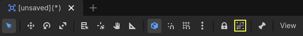
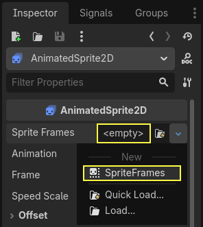
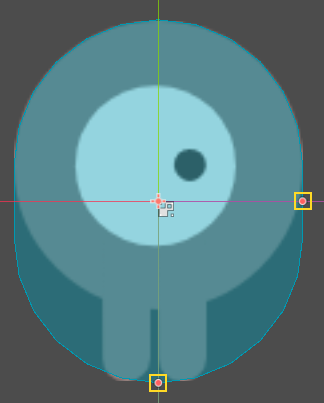

Tạo scene người chơi
Khi cài đặt dự án đã xong, chúng ta có thể bắt đầu làm nhân vật do người chơi điều khiển.
Scene đầu tiên sẽ định nghĩa đối tượng Player. Một trong những lợi ích của việc tạo scene Player riêng là chúng ta có thể kiểm thử nó riêng biệt, ngay cả trước khi tạo các phần khác của game.
Cấu trúc node
Để bắt đầu, chúng ta cần chọn một node gốc cho đối tượng người chơi. Theo nguyên tắc chung, node gốc của scene nên phản ánh chức năng mong muốn của đối tượng - đối tượng đó là gì. Ở góc trên bên trái, trong tab "Scene", nhấp vào nút "Other Node" và thêm một node Area2D vào scene.
Ghi chú
Godot cũng cung cấp node CharacterBody2D, được thiết kế riêng cho nhân vật 2D, có hỗ trợ sẵn một số quy trình được giải thích trong bài hướng dẫn này. Trong nhiều dự án thực tế, CharacterBody2D sẽ là lựa chọn tốt hơn cho người chơi và kẻ địch. Tuy nhiên, bài hướng dẫn này tập trung vào các khái niệm cốt lõi áp dụng cho nhiều loại node và tình huống sử dụng hơn.

Khi bạn thêm node Area2D, Godot sẽ hiển thị biểu tượng cảnh báo sau bên cạnh nó trong cây scene:

Cảnh báo này cho biết node Area2D cần một shape để phát hiện va chạm hoặc chồng lấn. Chúng ta có thể tạm thời bỏ qua cảnh báo vì trước tiên sẽ thiết lập phần hình ảnh của người chơi (dùng một animated sprite). Khi phần hình ảnh đã sẵn sàng, chúng ta sẽ thêm một collision shape làm node con. Nhờ vậy, chúng ta có thể điều chỉnh kích thước và vị trí của shape chính xác dựa trên hình dạng của sprite.
Với Area2D, chúng ta có thể phát hiện các đối tượng chồng lấn hoặc va vào người chơi. Đổi tên node thành Player bằng cách nhấp đúp vào nó. Giờ đã đặt node gốc cho scene, chúng ta có thể thêm các node khác để bổ sung chức năng.
Trước khi thêm node con vào node Player, chúng ta muốn đảm bảo không vô tình di chuyển hoặc thay đổi kích thước chúng khi nhấp vào. Chọn node và nhấp vào biểu tượng bên phải ổ khóa. Tooltip của nó ghi "Groups the selected node with its children. This causes the parent to be selected when any child node is clicked in 2D and 3D view."

Lưu scene với tên player.tscn. Nhấp Scene > Save, hoặc nhấn Ctrl + S trên Windows/Linux hoặc Cmd + S trên macOS.
Ghi chú
Trong dự án này, chúng ta sẽ tuân theo quy ước đặt tên của Godot.
GDScript: Lớp (node) dùng PascalCase, biến và hàm dùng snake_case, hằng số dùng ALL_CAPS (Xem Hướng dẫn phong cách GDScript).
C#: Lớp, biến export và phương thức dùng PascalCase, trường private dùng _camelCase, biến cục bộ và tham số dùng camelCase (Xem Hướng dẫn phong cách C#). Hãy cẩn thận gõ chính xác tên phương thức khi kết nối signal.
Hoạt ảnh sprite
Nhấp vào node Player và thêm (Ctrl + A trên Windows/Linux hoặc Cmd + A trên macOS) một node con AnimatedSprite2D. AnimatedSprite2D sẽ xử lý hình dạng và hoạt ảnh cho người chơi. Hãy để ý có một biểu tượng cảnh báo bên cạnh node. Một AnimatedSprite2D cần resource SpriteFrames, là danh sách các hoạt ảnh mà nó có thể hiển thị. Đảm bảo AnimatedSprite2D đang được chọn, sau đó tìm thuộc tính Sprite Frames trong mục Animation ở Inspector và nhấp "[empty]" -> "New SpriteFrames":

Nhấp vào SpriteFrames bạn vừa tạo để mở bảng "SpriteFrames":
Bên trái là danh sách hoạt ảnh. Nhấp vào hoạt ảnh default và đổi tên thành walk. Sau đó nhấp nút Add Animation để tạo hoạt ảnh thứ hai tên up.
Tìm các hình ảnh người chơi trong FileSystem dock - chúng nằm trong thư mục art bạn đã giải nén trước đó. Kéo hai hình ảnh của mỗi hoạt ảnh vào phía Animation Frames của bảng cho hoạt ảnh tương ứng:
playerGrey_walk1vàplayerGrey_walk2cho hoạt ảnhwalkplayerGrey_up1vàplayerGrey_up2cho hoạt ảnhup
Hình ảnh người chơi hơi lớn so với cửa sổ game, nên chúng ta cần thu nhỏ chúng. Nhấp vào node AnimatedSprite2D và đặt thuộc tính Scale thành (0.5, 0.5). Bạn có thể tìm nó trong Inspector, dưới tiêu đề Node2D.

Cuối cùng, thêm một CollisionShape2D làm con của Player. Node này sẽ xác định "hitbox" của người chơi, tức ranh giới vùng va chạm của nó. Với nhân vật này, node CapsuleShape2D là vừa vặn nhất, nên bên cạnh "Shape" trong Inspector, nhấp "[empty]" -> "New CapsuleShape2D". Dùng hai tay cầm kích thước để điều chỉnh shape bao phủ sprite:

Khi hoàn tất, scene Player của bạn sẽ trông như sau:

Sau khi xong, cảnh báo trên node Area2D sẽ biến mất, vì giờ nó đã được gán shape và có thể tương tác với các đối tượng khác.
Hãy nhớ lưu lại scene sau những thay đổi này.
Trong phần tiếp theo, chúng ta sẽ thêm script vào node người chơi để di chuyển và tạo hoạt ảnh cho nó. Sau đó, chúng ta sẽ thiết lập phát hiện va chạm để biết khi nào người chơi bị một thứ gì đó đâm trúng.